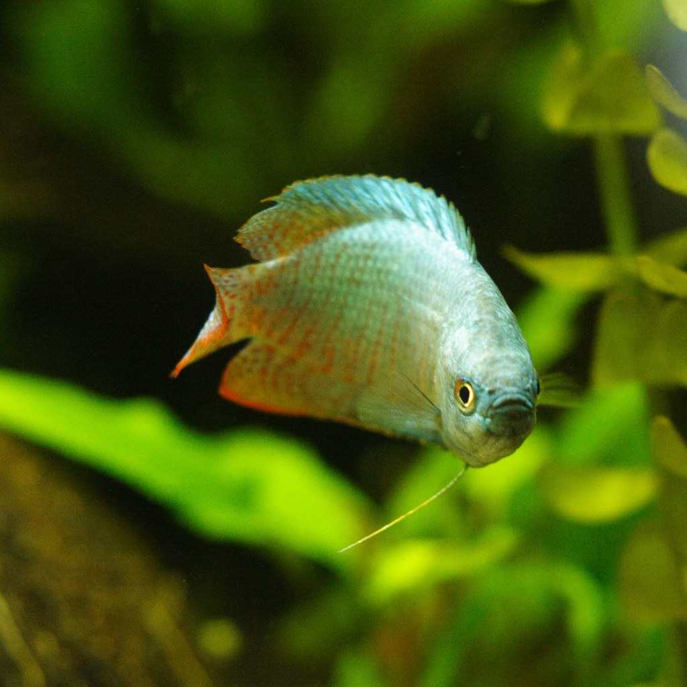

The Dwarf Gourami is a calm fish that moves slowly. They grow to be about 3.5 inches. They aren't a schooling fish, and instead they like to be with other species of fish. They are usually easy to look after.
"Dwarf Gourami" by Stopped. is licensed under CC BY-NC-SA 2.0 https://search.creativecommons.org/photos/2255ec66-f727-4ebb-a724-c66216cc28a2